The content on this page come from the Star WarsWikipedia page.
Home
Original Trilogy
Prequel Trilogy
Sequel Trilogy
Other Films & TV
Star Wars Canon
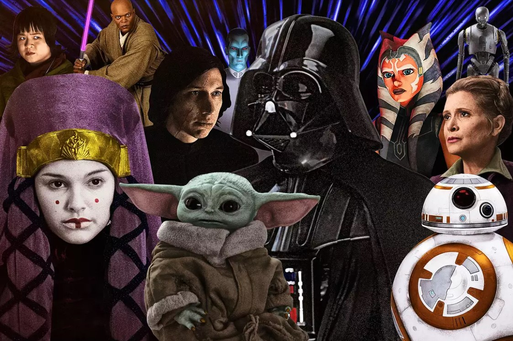
Star Wars is an American epic space opera multimedia franchise created by George Lucas, which began with the eponymous 1977 film and quickly became a worldwide pop culture phenomenon. The franchise has been expanded into various films and other media, including television series, video games, novels, comic books, theme park attractions, and themed areas, comprising an all-encompassing fictional universe. Star Wars is one of the highest-grossing media franchises of all time.
The original film Star Wars retroactively subtitled Episode IV: A New Hope (1977), was followed by the sequels Episode V: The Empire Strikes Back (1980) and Episode VI: Return of the Jedi (1983), forming the original Star Wars trilogy. Lucas later returned to the series to direct a prequel trilogy, consisting of Episode I: The Phantom Menace (1999), Episode II: Attack of the Clones (2002), and Episode III: Revenge of the Sith (2005). In 2012, Lucas sold his production company to Disney, relinquishing his ownership of the franchise. This led to a sequel trilogy, consisting of Episode VII: The Force Awaken (2015), Episode VIII: The Last Jedi (2017), and Episode IX: The Rise of Skywalker (2019).
All nine films of the "Skywalker Saga" were nominated for Academy Awards, with wins going to the first two releases. Together with the theatrical live action "anthology" films Rogue One (2016) and Solo (2018), the combined box office revenue of the films equated to over 10 billion dollars, which makes it the second-highest-grossing film franchise of all time.
Original Trilogy
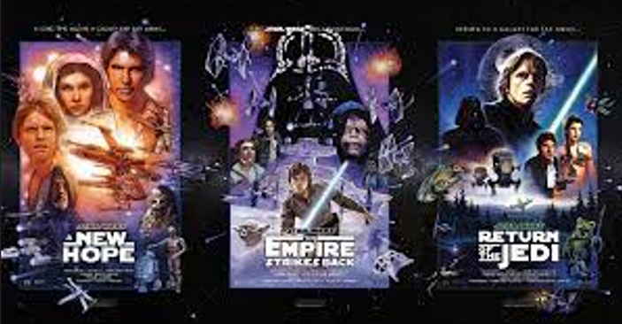
In 1971, George Lucas wanted to film an adaptation of the Flash Gordon serial, but could not obtain the rights, so he began developing his own space opera. After directing American Graffiti (1973), he wrote a two-page synopsis, which 20th Century Fox decided to invest in. By 1974, he had expanded the story into the first draft of a screenplay. Fox expected the film would be of limited financial success, and so it was given a relatively low budget, with production being moved to Elstree Studios in England to help save on cost. Many of the scenes were shot in England, and so featured a number of British actors. The Star Wars robots were built by the small English company Peteric Engineering. A 2019 BBC documentary revealed how the parts required to create these machines and other now iconic film props, including the light sabers (originally called 'laser guns'), were ingeniously recycled from items scavenged in junk shops, ever conscious of the need to spend as little money as possible. The 1977 movie's success led Lucas to make it the basis of an elaborate film serial. With the backstory he created for the sequel, Lucas decided that the series would be a trilogy of trilogies. Most of the main cast would return for the two additional installments of the original trilogy, which were self-financed by Lucasfilm.
Star Wars was released on , and first subtitled Episode IV: A New Hope in the 1979 book The Art of Star Wars. Episode V: The Empire Strikes Back was released on , also achieving wide financial and critical success. The final film in the trilogy, Episode VI: Return of the Jedi was released on . The story of the original trilogy focuses on Luke Skywalker's quest to become a Jedi, his struggle with the evil Imperial agent Darth Vader, and the struggle of the Rebel Alliance to free the galaxy from the clutches of the Galactic Empire.
Prequel Trilogy
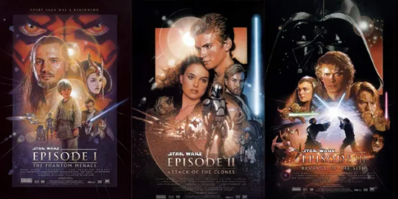
According to producer Gary Kurtz, loose plans for a prequel trilogy were developed during the outlining of the original two films. In 1980, Lucas confirmed that he had the nine-film series plotted, but due to the stress of producing the original trilogy, he had decided to cancel further sequels by 1981. In 1983, Lucas explained that "There was never a script completed that had the entire story as it exists now ... As the stories unfolded, I would take certain ideas and save them ... I kept taking out all the good parts, and I just kept telling myself I would make other movies someday."
Technical advances in the late 1980s and early 1990s, including the ability to create computer-generated imagery (CGI), inspired Lucas to consider that it might be possible to revisit his saga. In 1989, Lucas stated that the prequels would be "unbelievably expensive". In 1992, he acknowledged that he had plans to create the prequel trilogy. A theatrical rerelease of the original trilogy in 1997 "updated" the 20-year-old films with the style of CGI envisioned for the new trilogy.
Episode I: The Phantom Menace was released on , and Episode II: Attack of the Clones on . Episode III: Revenge of the Sith, the first PG-13 film in the franchise, was released on . The first two movies were met with mixed reviews, with the third being received somewhat more positively. The trilogy begins 32 years before Episode IV and follows the Jedi training of Anakin Skywalker, Luke's father, and his eventual fall from grace and transformation into the Sith lord Darth Vader, as well as the corruption of the Galactic Republic and rise of the Empire led by Darth Sidious. Together with the original trilogy, Lucas has collectively referred to the first six episodic films of the franchise as "the tragedy of Darth Vader".
Sequel Trilogy
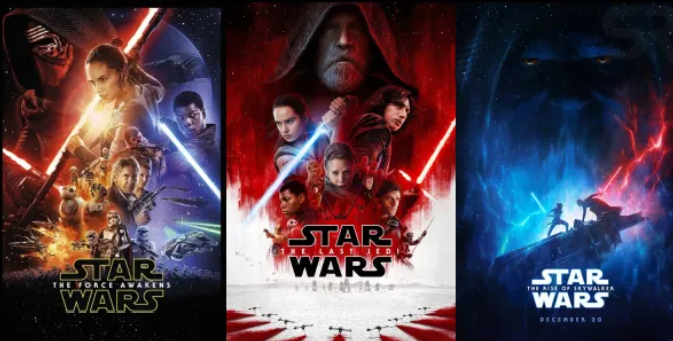
Prior to releasing the original film, and made possible by its success, Lucas planned "three trilogies of nine films". However, he announced to Time in 1978 that he planned "10 sequels". He confirmed that he had outlined the prequels and sequels in 1981. At various stages of development, the sequel trilogy was to focus on the rebuilding of the Republic, the return of Luke in a role similar to that of Obi-Wan Kenobi in the original trilogy, Luke's sister (not yet determined to be Leia), Han, Leia, R2-D2 and C-3PO. However, after beginning work on the prequel trilogy, Lucas insisted that Star Wars was meant to be a six-part series and that there would be no sequel trilogy.
Lucas decided to leave the franchise in the hands of other filmmakers, announcing in January 2012 that he would make no more Star Wars films. That October, the Walt Disney Company agreed to buy Lucasfilm and announced that Episode VII would be released in 2015. The co-chairman of Lucasfilm, Kathleen Kennedy, became president and served as executive producer of new Star Wars feature films. Lucas provided Kennedy his story treatments for the sequels during the 2012 sale, but in 2015 it was revealed Lucas's sequel outline had been discarded. The sequel trilogy also meant the end of the existing Star Wars Expanded Universe, which was discarded from canon to give "maximum creative freedom to the filmmakers and also preserve an element of surprise and discovery for the audience.
Episode VII: The Force Awakens was released on ,Episode VIII: The Last Jedi on , and Episode IX: The Rise of Skywalker on , in many countries. The Force Awakens and The Last Jedi were both critical and box office successes. Episode IX received a mixed reception from critics and audiences. The sequel trilogy starts 30 years after Episode VI and focuses on the journey of the Force-sensitive orphan Rey, guided by Luke Skywalker. Along with ex-stormtrooper Finn and ace X-Wing pilot Poe Dameron, Rey helps the Resistance, led by Leia, fight the First Order, commanded by Han and Leia's son (and Luke's nephew), Kylo Ren.
Other Films and TV
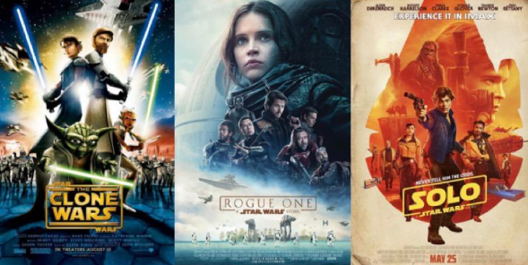
Lucasfilm and Kennedy have stated that the standalone films would be referred to as the Star Wars anthology series (though the word anthology has not been used in any of the titles, instead carrying the promotional "A Star Wars Story" subtitle). Focused on how the Rebels obtained the Death Star plans introduced in the 1977 film, the first anthology film, Rogue One: A Star Wars Story, was released on , to favorable reviews and box office success. The second, Solo: A Star Wars Story, centered on a young Han Solo with Chewbacca and Lando as supporting characters, was released on , to generally favorable reviews and underperformance at the box office. The television series Obi-Wan Kenobi was originally going to be a film instead but changed to a limited series due to Solo underperforming. Despite this, more anthology films are expected to be released, following a hiatus after 2019's The Rise of Skywalker.
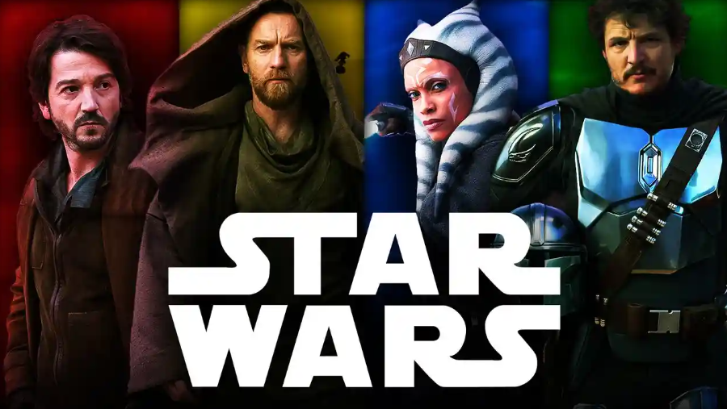
The Star Wars franchise has been spun off to various television productions, including two animated series released in the mid-1980s. Further animated series began to be released in the 2000s, the first two of which focused on the Clone Wars. After Disney's acquisition of Lucasfilm, only the later CGI series remained canon. Eight live-action Star Wars series will be released on Disney+. The first, The Mandalorian, premiered on , and won the 2020 Webby Award for Television & Film in the category Social. Disney+ later released the Ewoks movies. Since, several live-action television shows were released on Disney+ - The Book of Boba Fett (2021), Andor (2022), two more seasons of The Mandalorian, and the upcoming Askoha (2023).
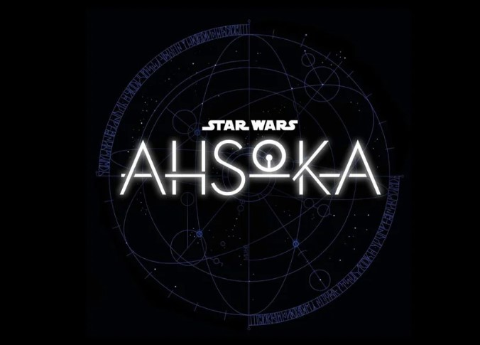
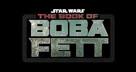
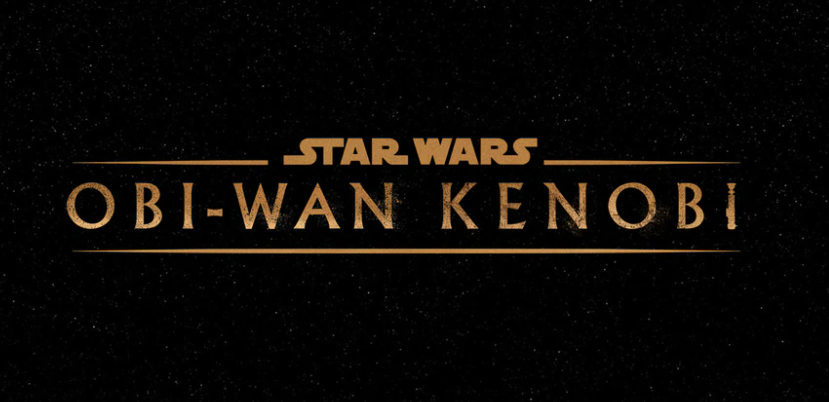
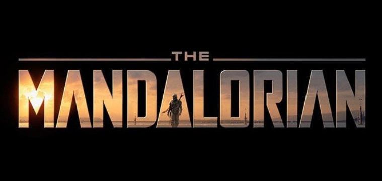
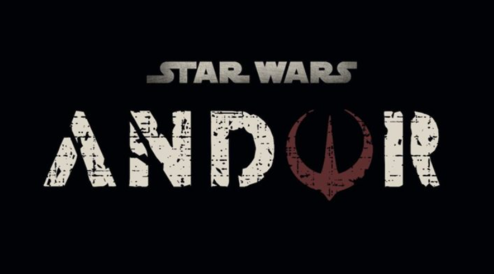
Star Wars Canon
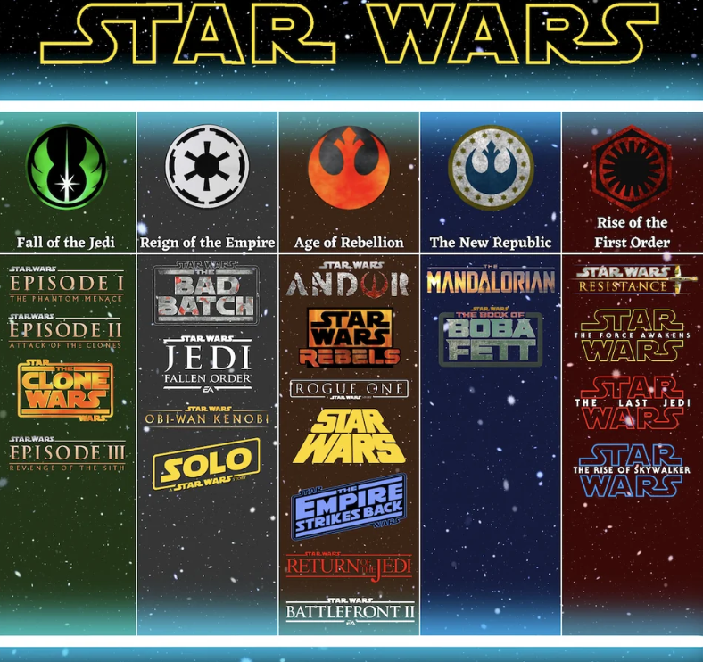
The image above does not show The High Republic era in the Star Wars Canon because no tv shows or movies have been made yet in this era. The image only shows tv shows and movies made to date.
The Star Wars canon fictional universe spans multiple eras, of which three are focused around each of the film trilogies. The following eras were defined in January 2021:
The High Republic
The era of the "High Republic", set 200 years before the prequel trilogy. It includes the media released in The High Republic and the upcoming Young Jedi Adventures and The Acolyte.
Fall of the Jedi
The era of the prequel trilogy, in which the democratic Galactic Republic is corrupted by the Supreme Chancellor Palpatine, who is secretly the Sith Lord Darth Sidious. After orchestrating the Clone Wars between the Republic and a Separatist confederation, Palpatine exterminates the Jedi Order, overthrows the Republic, and establishes the totalitarian Galactic Empire. It includes the prequel trilogy films and the animated The Clone Wars and Tales of the Jedi.
Reign of the Empire
The era after the prequel trilogy, exploring the reign of the Empire. It includes the animated The Bad Batch, Solo: A Star Wars Story and Obi-Wan Kenobi.
Age of Rebellion
The era of the original trilogy, in which the Empire is fought by the Rebel Alliance in a Galactic Civil War that spans several years, climaxing with the death of the Emperor and fall of the Empire. It includes the animated Star Wars Rebels, Andor, Rogue One: A Star Wars Story, and the original trilogy films.
The New Republic
The era after the original trilogy, set during the formative years of the New Republic following the fall of the Empire. It includes The Mandalorian and its spin-off series, The Book of Boba Fett and Ahsoka, as well as the upcoming Skeleton Crew.
Rise of the First Order
The era of the sequel trilogy, in which the remnants of the Empire have reformed as the First Order. Heroes of the former Rebellion, aided by the New Republic, lead the Resistance against the oppressive regime and its rulers—the mysterious being known as Snoke and the revived Palpatine. It includes the animated Star Wars Resistance and the sequel trilogy films.
The Expanded Universe of spin-off media depicts different levels of continuity, which were deemed non-canonical and rebranded as Legends on , to make most subsequent works align to the episodic films, Star Wars: The Clone Wars, and television series.